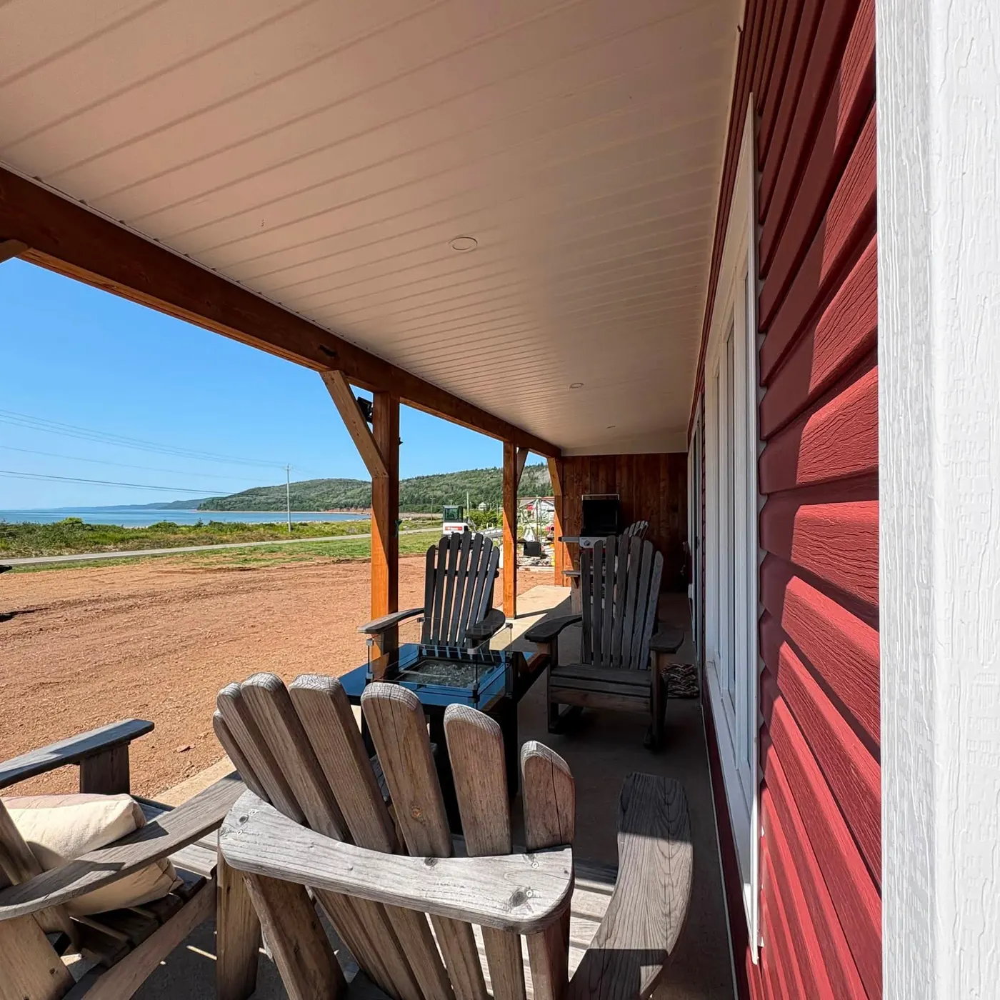
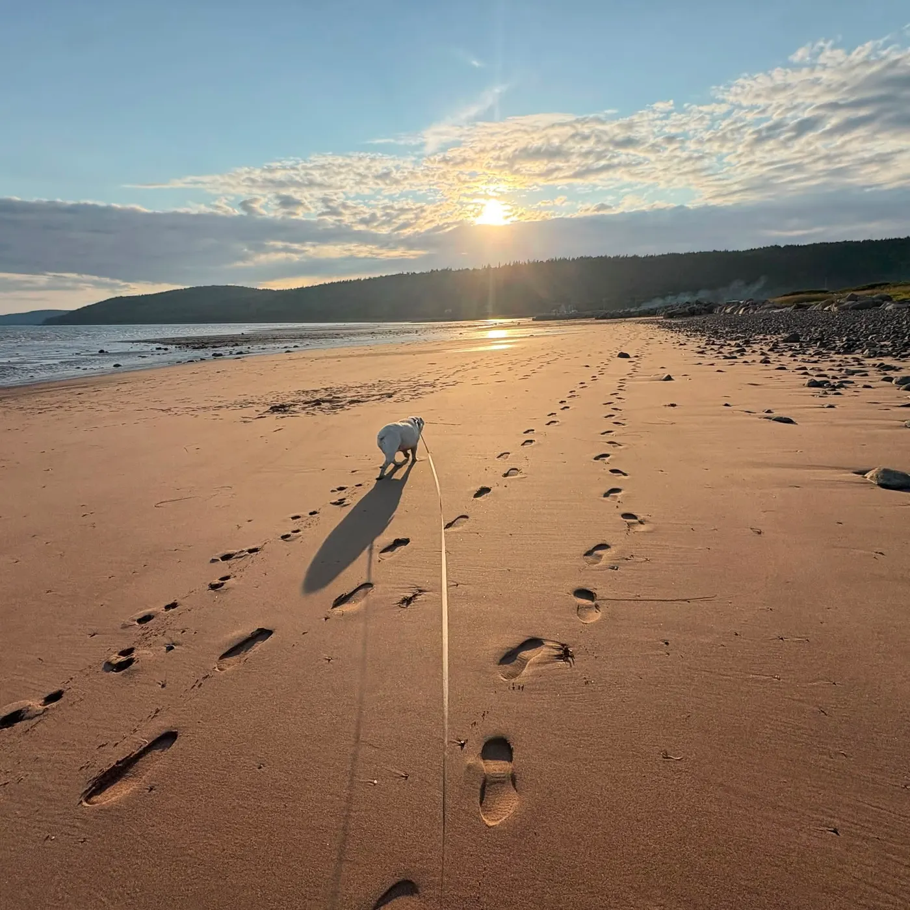
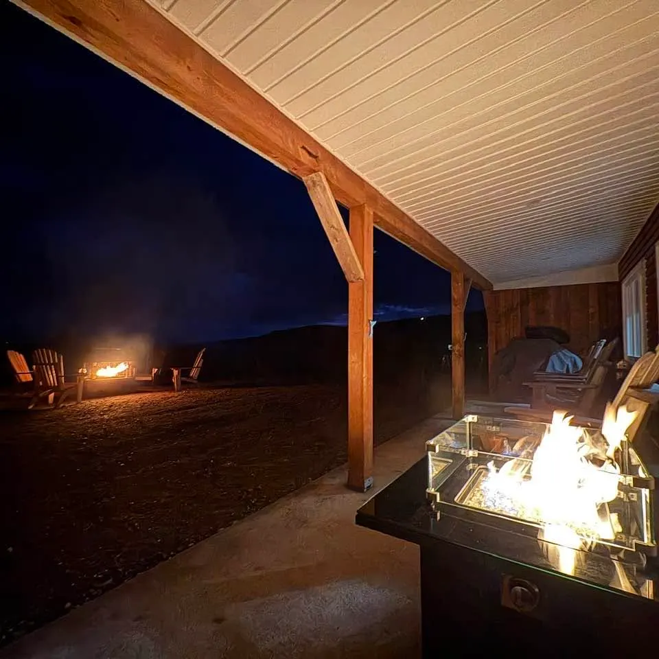
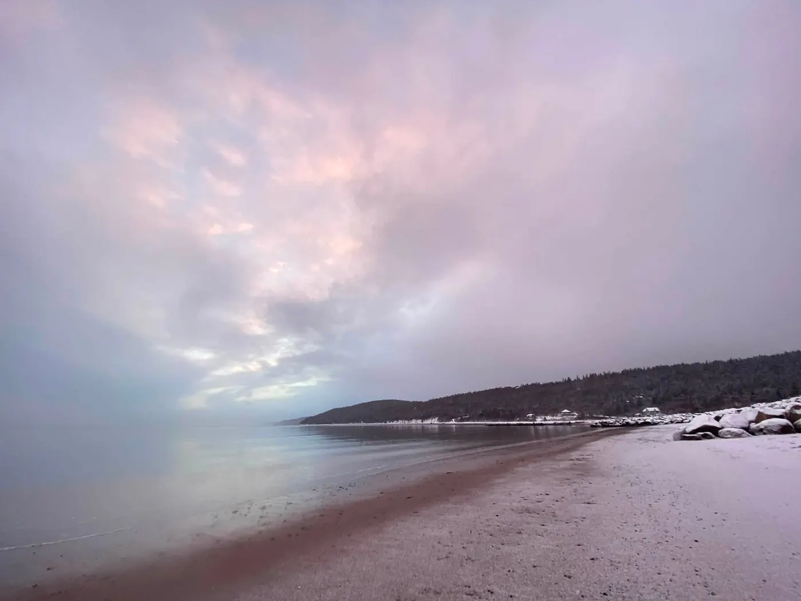
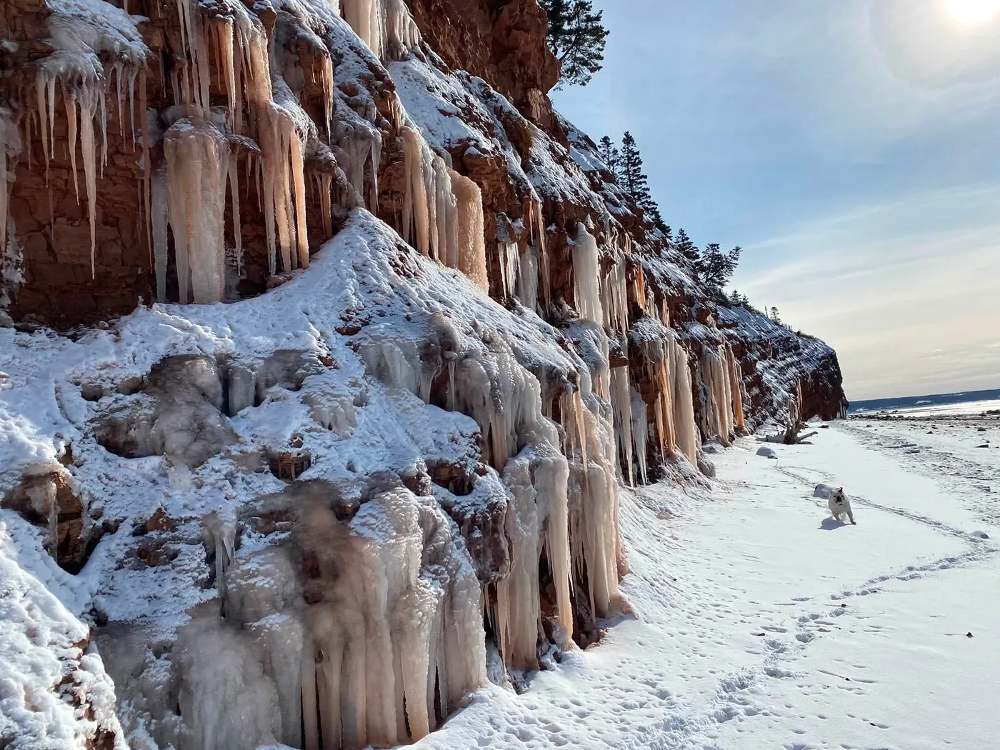
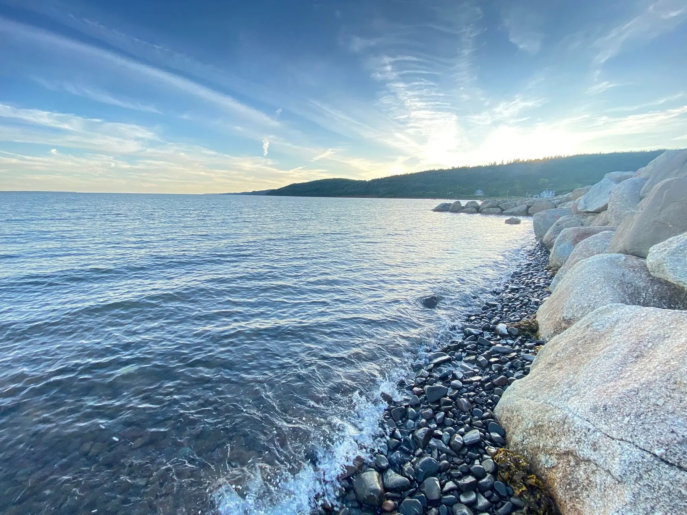
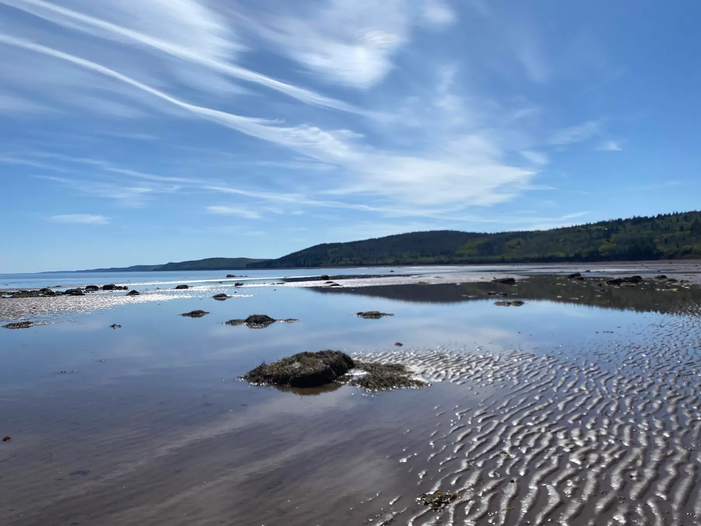
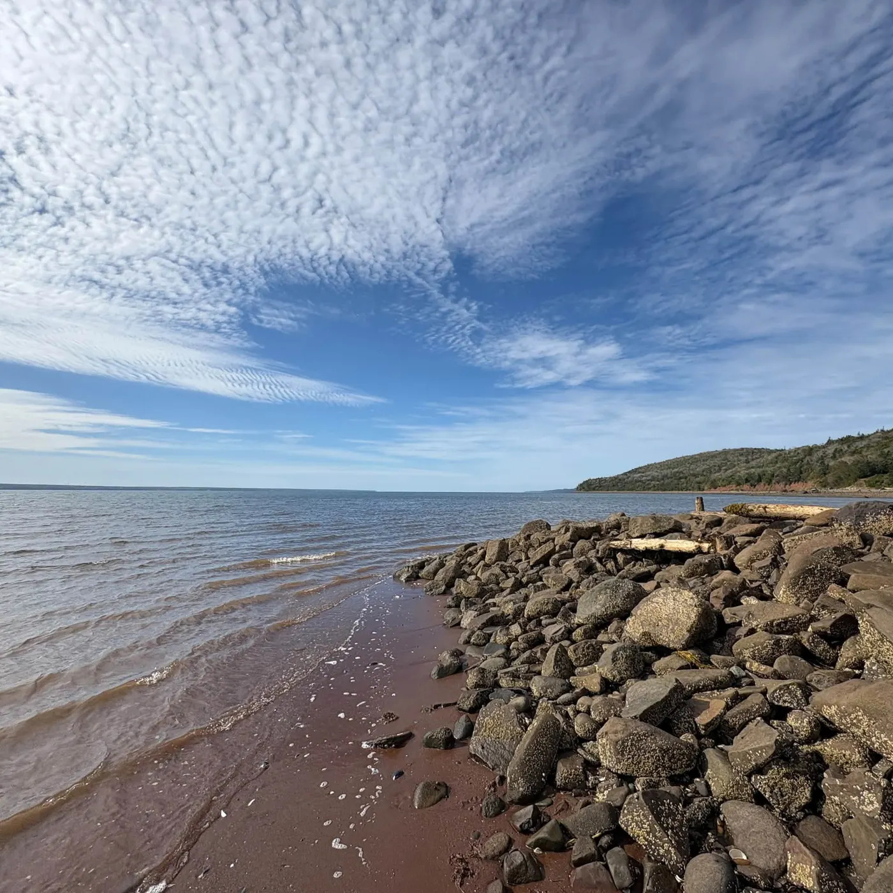
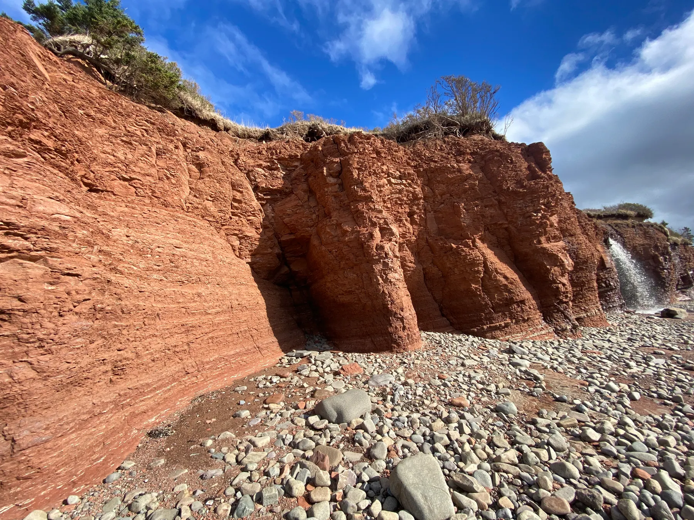
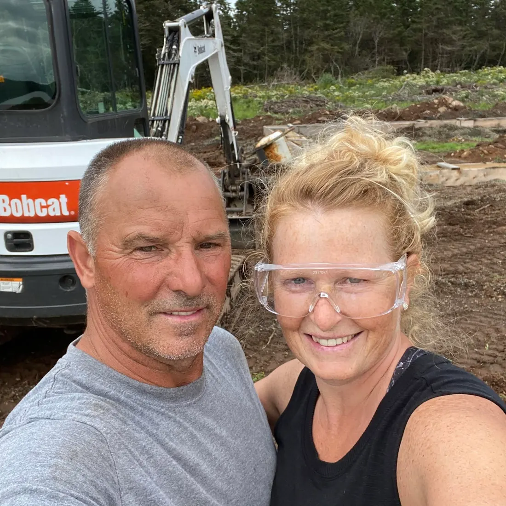

Wake up to St. Mary's Bay
Year-round cottages in Rossway on the Digby Neck, Nova Scotia. The beach is a five-minute walk from your door.
A quiet cottage with the bay out front
Seawall Beach Cottages sit above the shore in Rossway, looking out over St. Mary's Bay. Mornings start with the sun coming up over the water. A five-minute walk takes you down to the beach, where you can swim, snorkel, paddle, or comb the stones for treasures.
-

Bay viewOcean views
Watch the bay from the porch, morning to night.
-

5 minBeach nearby
Five minutes on foot to swimming, snorkeling and kayaking.
-

RosswayPrivate setting
No crowds. Just the porch, the fire table and the sound of the water.
-

DawnPeaceful escape
Sunrise on the beach, sunset on the porch, and nowhere you have to be.
-

12 monthsOpen year round
Summer swims, autumn colour, frozen waterfalls in winter.
Plan your day around the tide
St. Mary's Bay rises and falls about five metres, twice a day. Low tide opens up the sea floor for rockhounding and wandering the flats. High tide brings the water up the beach for kayaking, swimming and snorkeling.
Loading today's tides…
Best at low tide
- Rockhound the beach for agates, jasper and sea glass
- Walk out across the rippled sand flats and tide pools
Best at high tide
- Kayak along the red cliffs
- Swim off the beach
- Snorkel in the clear shallows
Any tide
- Hike the trail along the Redhead Cliffs
- Catch sunrise and sunset on the beach
Tide predictions for East Sandy Cove on St. Mary's Bay, from Fisheries and Oceans Canada. Times are Atlantic time. Not for navigation.
From the porch to the cliffs
Here's the walk from the cottage, and what you'll find along the shore.
-
The porch
Start with coffee in an Adirondack chair and the bay laid out in front of you.
-

The seawall
Big boulders line the shore. At high tide the waves wash right up against them.
-
The beach
Five minutes on foot and you're on the sand. Sunrise here is worth the early alarm.
-

The tide flats
When the tide goes out, the bay leaves rippled sand and shallow pools to wander through.
-

Beach treasures
Rockhounds, bring a bucket. The cobble beach is full of colourful stones.
-

The Redhead Cliffs
Red sandstone cliffs run along the shore. Hike along the top or paddle along the bottom.
-
The waterfall
A stream pours off the cliff edge, straight down onto the stones.
-
In winter
Come back in January and the same cliffs hang with ice. We're open all year.
-
Back home
Light the fire table and watch the bay go dark.
Drop us a line

Your hosts, the Van Tassels
Fresh from the shore
We post what the bay is up to on Facebook and Instagram: ice in February, kayaks in July, and plenty of sunrises in between.
Preview posts. The live feed connects once the Facebook and Instagram accounts are linked.